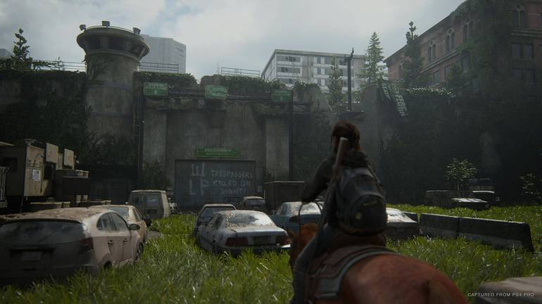
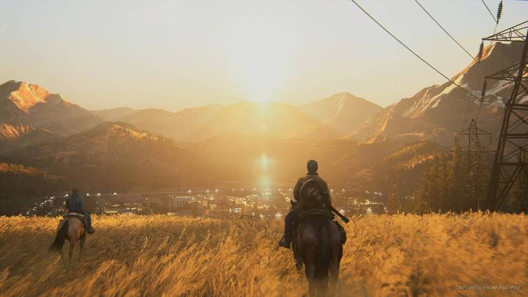

Bem-vindo ao Meu Site
Esta é a página inicial dedicada a dar irformacoes sobre o jogo The last of us part 2 Remastered .
O que há de novo
The Last of Us Part II Remastered foi projetado, de acordo com o estúdio, para permitir uma imersão mais profunda tanto no desenvolvimento quanto nas mecânicas, conforme destacado pela Naughty Dog no blog oficial da PlayStation. A campanha contará com melhorias tecnológicas e também um novo modo. Destaca-se, entre essas adições, um novo modo chamado No Return: um modo de sobrevivência ao estilo roguelike projetado para permitir que os jogadores "demonstrem habilidade em encontros aleatórios e experimentem o combate de The Last of Us Part II de uma maneira inédita."
O modo inclui diferentes personagens jogáveis — alguns deles estarão disponíveis pela primeira vez na franquia The Last of Us, cada um com as próprias características para se adequar a diferentes estilos de jogo. Os jogadores traçarão o próprio caminho em cada tentativa, escolhendo entre abordagens furtivas e de combate que os colocarão contra uma variedade de inimigos. Cada tentativa oferecerá uma nova chance de decidir quais recompensas você obtém após cada encontro, como você personaliza o personagem e muito mais. Em certa medida, é algo que se assemelha aos modos de sobrevivência de Resident Evil Village e outros jogos da série da Capcom.
Acessibilidade
A premiada gama de opções de acessibilidade vista na versão original de The Last of Us Part II Remastered foi adaptada para a experiência no PS5 juntamente com novidades como a inclusão de Áudio Descritivo e Fala para Vibrações, utilizando o controle DualSense para indicar o discurso e cadência dos personagens. O Modo Speedrun desbloqueável, presente em The Last of Us Part I, também será incorporado a Part II Remastered, permitindo que os jogadores compartilhem em quanto tempo conseguiram cumprir desafios.
Seguindo o exemplo de The Last of Us Part I, The Last of Us Part II Remastered inclui a possibilidade de desbloquear skins extras para Ellie, Abby e para as armas delas. Uma primeira amostra dessas skins pode ser vista no próprio trailer de anúncio. Em relação ao Modo Fotografia, foram adicionados recursos que os jogadores de The Last of Us Part I podem reconhecer, como iluminação dinâmica, Avanço de Quadro, Direção do Olhar, além de novas opções de moldura e logotipo.